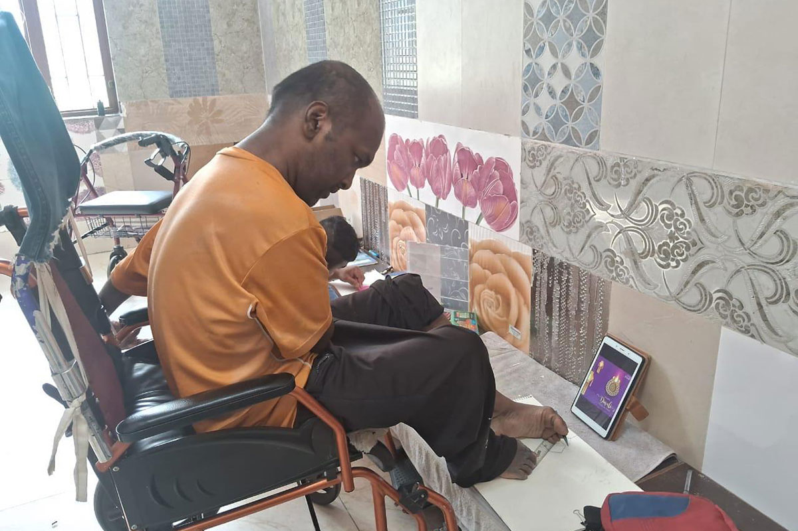
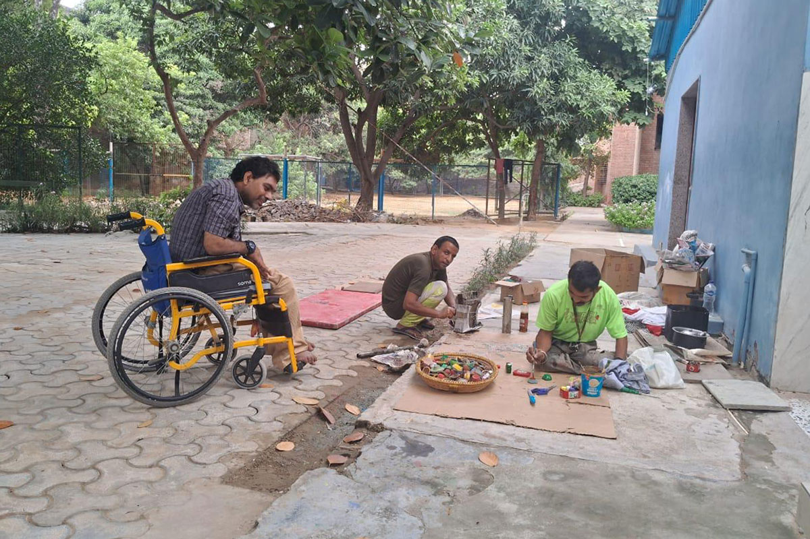
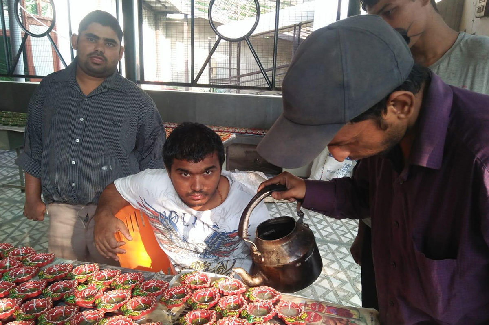
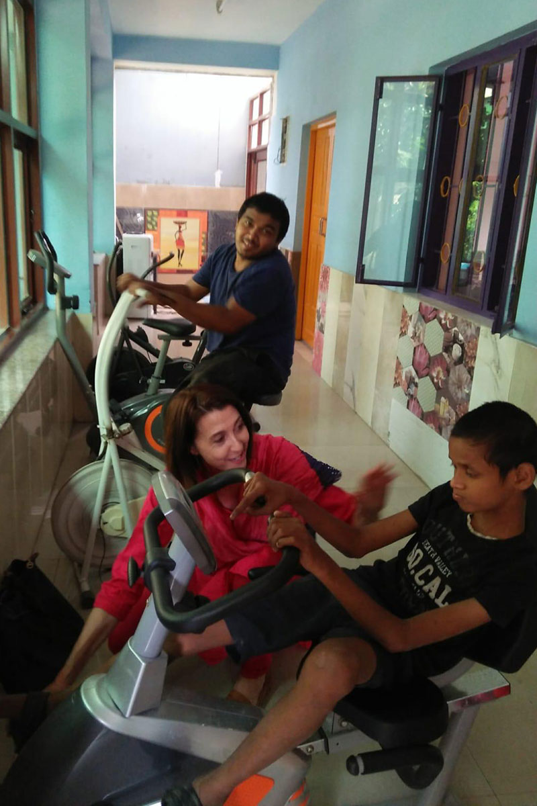
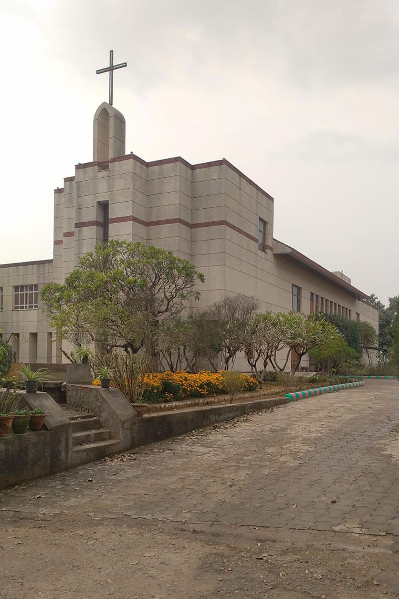
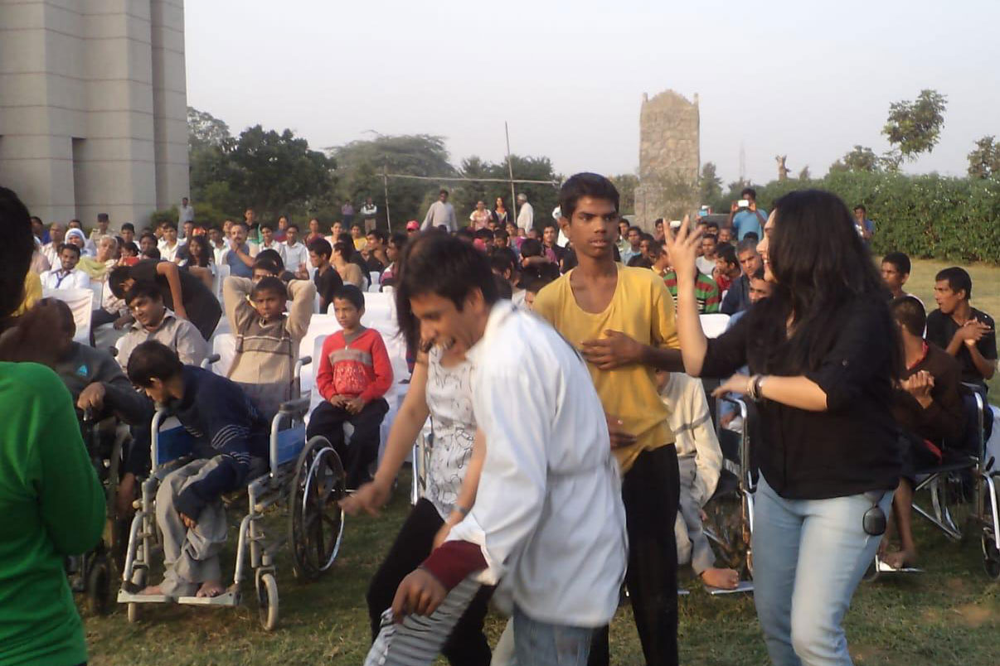
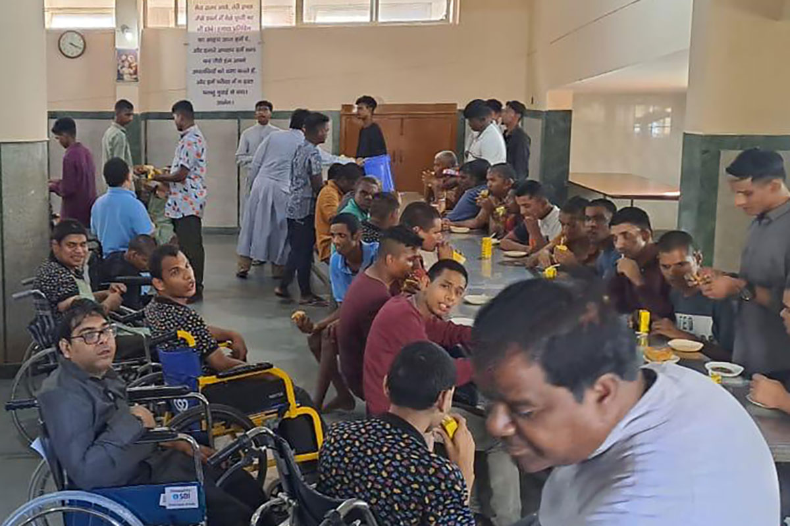
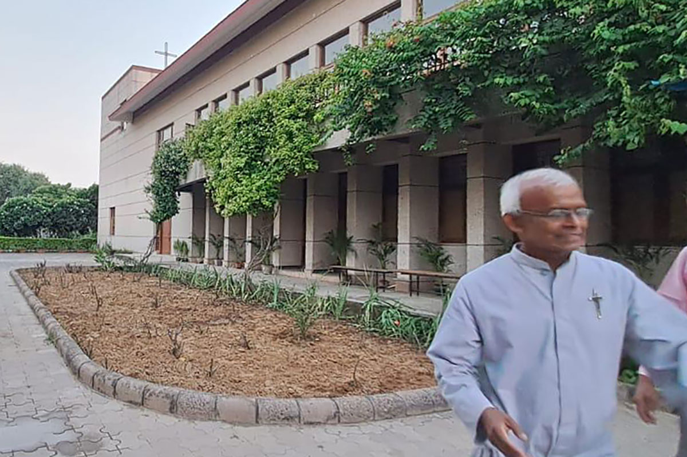

Passati e futuri
Progetto Deepashram
Il Progetto "Deepashram" in Rajiv Nagar Gurgaon a pochi chilometri da Delhi, in una casa fondata da Madre Teresa di Calcutta oggi gestita dai Missionari della Carità che ospita ragazzi orfani, abbandonati perchè affetti da diverse patologie: ci sono bambini ciechi, muti, sordi, spastici, poliomielitici e disabili mentali. A Deepashram si sentono a casa, amati e accuditi con amore e tenerezza. Grazie al Vostro sostegno economico abbiamo garantito l'accesso alla fisioterapia, e all'istruzione per i 39 ragazzi accolti dai Missionari che quotidianamente se ne prendono cura.
- ragazzi orfani
- fisioterapia
- istruzione
- 39 ragazzi




Progetto Karunanjali School
Il progetto "Karunanjali School" è gestito dalle Suore di Sant'Anna per i bambini con problemi mentali, che non dispongono di strutture di formazione, in Talagaon Dabhade, nelle zone rurali dello Stato del Maharashtra. Le suore, girando per i villaggi, si sono imbattute in un gran numero di bambini con problemi mentali, tenuti a casa senza alcuna istruzione o formazione. Grazie anche al nostro contributo, questi bambini oggi hanno una scuola dove possono essere ospitati in forma residenziale o solo nelle ore diurne. Attualmente sono 33 i bambini accolti e 13 quelli che frequentano il centro diurno.
- bambini con problemi mentali
- Scuola residenziale e diurna
- 33 + 13 bambini
- donare speranza e felicità


Progetto Anandasharam
In India lavoriamo in contesti di estrema povertà dove l'accesso alle cure mediche e all'istruzione è ancora un privilegio. I nostri volontari operano sul campo per garantire un futuro ai bambini più vulnerabili.
- Costruzione e supporto di scuole rurali
- Programmi nutrizionali e sanitari
- Formazione per insegnanti locali
- Sostegno a distanza per bambini




Progetto Calcutta


In India lavoriamo in contesti di estrema povertà dove l'accesso alle cure mediche e all'istruzione è ancora un privilegio. I nostri volontari operano sul campo per garantire un futuro ai bambini più vulnerabili.
- Costruzione e supporto di scuole rurali
- Programmi nutrizionali e sanitari
- Formazione per insegnanti locali
- Sostegno a distanza per bambini